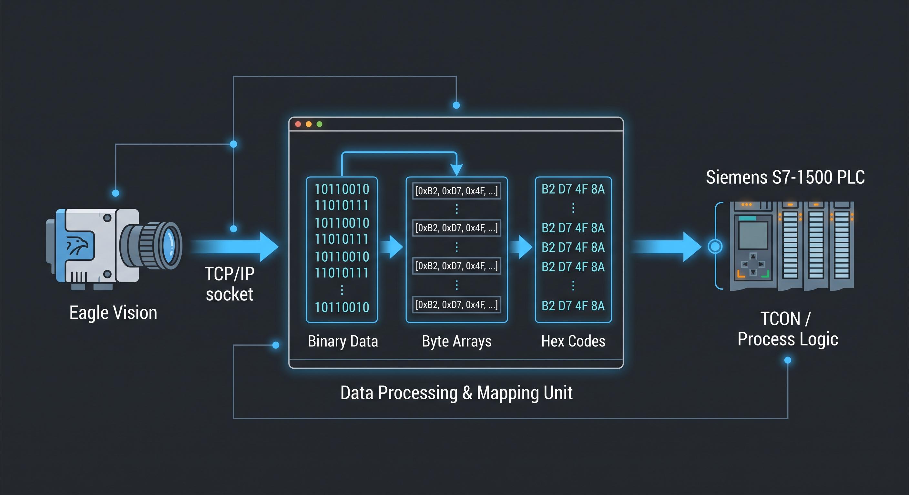
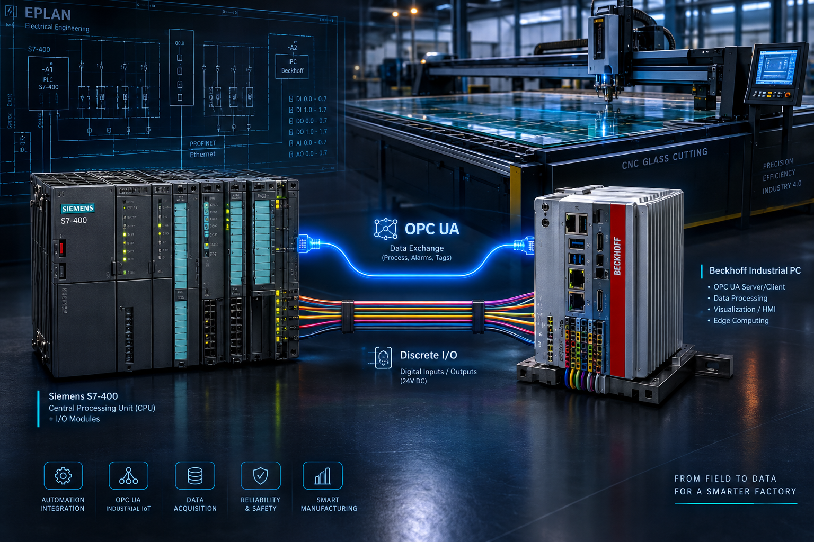
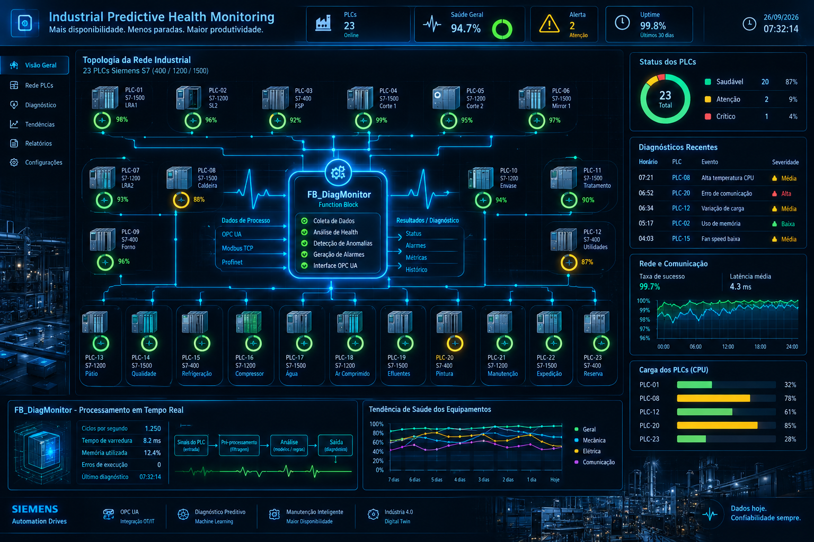
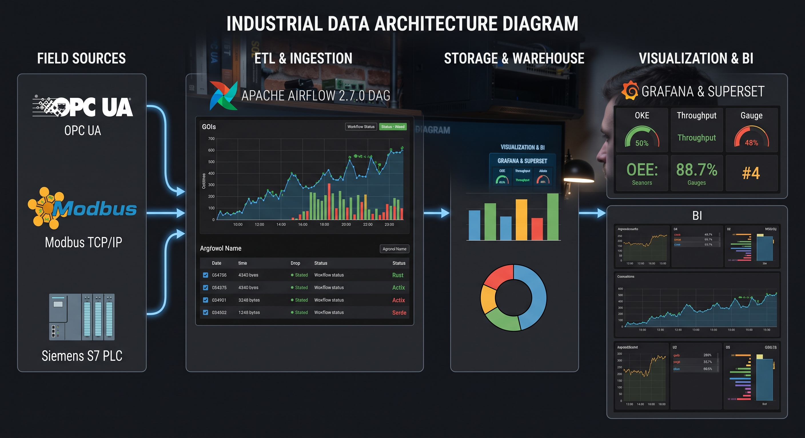
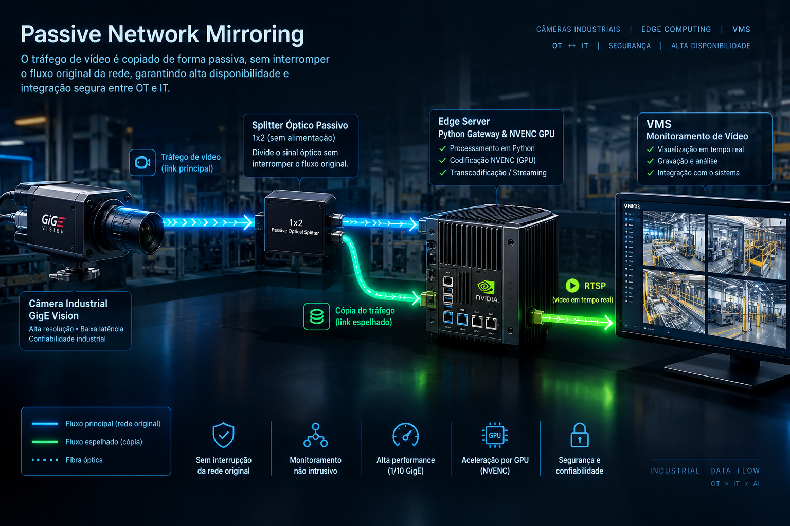

Industrial automation · Field Instrumentation · SCADA · industrial data
Victor Jenckel.
Industrial Automation, Field Instrumentation, SCADA & Data Integration Engineer
I connect field instrumentation, PLCs and SCADA/HMI systems into data that runs the plant — sixteen years on the factory floor, now paired with a Computer Engineering degree and production data pipelines. Currently focused on SCADA integration and plant-wide historian & data projects.
- 16 years, industrial automation & instrumentation
- B.Eng. Computer Engineering, 2026
- Taubaté, Brazil — open to remote & on-site work
My approach
From sensor to decision.
Field instrumentation
Pressure, flow, level and temperature transmitters, control valves, thermocouples, wiring and loop checks.
Control logic
PLC programming across Siemens and Rockwell platforms — interlocks, sequencing, and commissioning.
SCADA & HMI
Screen design, alarms, user administration and historians — GE iFIX, Ignition.
Systems integration
Bridging equipment from different vendors over OPC UA, Modbus TCP, PROFINET and Profibus.
Data & IT
Pipelines, databases and dashboards that turn plant data into decisions — Airflow, PostgreSQL, Rust.
Commissioning & handover
Startup support, troubleshooting, documentation and as-built drawings (EPLAN).
Selected work
Projects I've built and shipped.
 Add a photo:
Add a photo:assets/img/scada-ifix.jpg
SCADA
SCADA Administration — GE iFIX & Historian
Day-to-day ownership of the plant's GE iFIX 6.1 SCADA across production lines: screen design, user administration, database configuration and GE Historian support.

Add a photo:assets/img/eagle-vision.jpg
Automation
Eagle Vision Inspection Integration — Siemens S7-1500
Built a complete TCP communication block (FB_TCPChannel) between the Eagle Vision inspection machine and the line PLC, with a TCON/TDISCON state machine and a sequential counter that removed a race condition in paired-sheet tracking. Running in live production.

Add a photo:assets/img/cnc-integration.jpg
Automation
CNC Cutting Table Integration — Siemens S7-400
Integrated a Lisec CNC cutting table (Beckhoff soft-PLC and drives) into the automatic glass cutting line, driven by a Siemens S7-400, over OPC UA and discrete I/O. Owned the electrical as-built (EPLAN) and all new automation logic.

Add a photo:assets/img/plc-health.jpg
Automation
Predictive PLC Health Monitoring — FB_DiagMonitor
A self-built diagnostic system for 23 Siemens PLCs (S7-400/1200/1500), running three independent concurrent monitoring routines in SCL, tested and refined live in TIA Portal.

Add a photo:assets/img/dc2-pipeline.jpg
Data
DC2 — Production Data Platform
Designed, shipped and maintain a production data platform: five Airflow DAGs and Rust ETL binaries ("brain/muscle" architecture) for the Eagle, FSP and ISRA inspection lines, containerised for an air-gapped network and feeding the company's BI over PostgreSQL.

Add a photo:assets/img/rtsp-gateway.jpg
Integration
Passive RTSP Gateway for GigE Vision Cameras
Built a passive network gateway that mirrors GigE Vision camera traffic from an inspection line, reconstructs live frames from raw GVSP packets with a custom Python sniffer, and re-encodes them with NVENC into an RTSP feed for the plant's VMS — without ever touching the proprietary inspection controller. Runs in production as systemd services with a watchdog and frame-concealment logic for dropped packets.
Currently building: a home lab for Edge & IIoT — ESP32 and Raspberry Pi, an Ignition SCADA lab in Docker, MQTT→Kafka pipelines, and a Rust library for S7/Modbus communication. Currently studying for the Inductive Automation Ignition Certification.
Career
Industry experience.
Project Technician
Cebrace Vidros Planos · Caçapava, SPElectronics Technician
Cebrace Vidros Planos · Caçapava, SPElectronics Technician
Klabin · Jundiaí, SPMaintenance Electrician
Correias Mercúrio S.A. · Jundiaí, SPMaintenance Electrician
Casf Engenharia · Jundiaí, SPElectrical Panel Assembler
Elepaineis Painéis Elétricos · Mogi das Cruzes, SPToolkit
Education & skills.
Get in touch
Have a system to integrate?
Talk to me about a SCADA migration, a PLC integration, or a data pipeline for your plant.